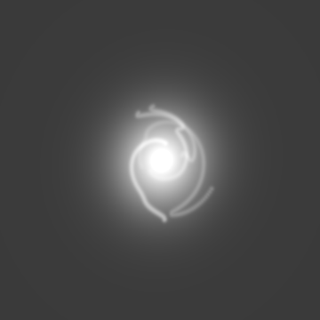
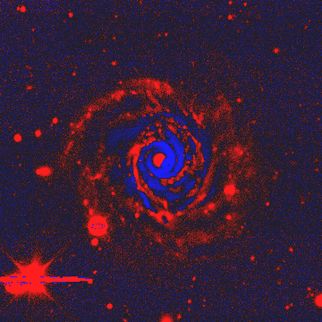
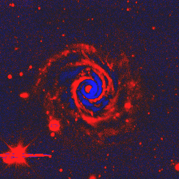

These are the actual saved GALFIT bulge, disk and optional bar components, with arm light fitted separately using a fixed smooth model. The arm-light reconstruction is a diagnostic fit, not a simultaneous physical decomposition.



All residuals are signed numerical subtractions from the original g-band FITS data, using the same display scale per galaxy. Red is positive residual; blue is excess model light. The multiband original is a visual reference. Model light is g band.